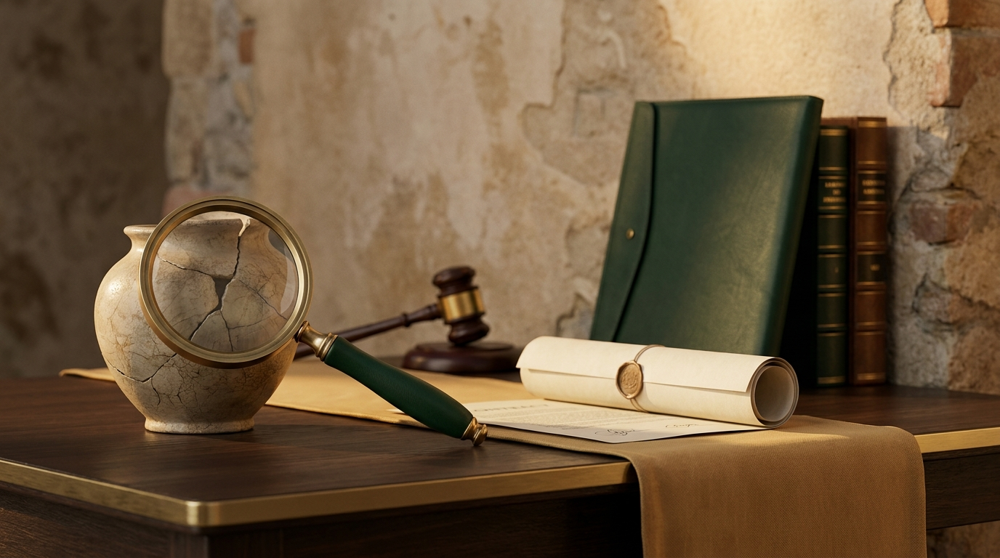

Vizi riconoscibili e autoresponsabilità del compratore
Una pronuncia del Tribunale di Grosseto torna su un punto pratico ma spesso sottovalutato: chi compra non può lamentare i difetti che avrebbe potuto vedere con un controllo ordinario. Il principio di autoresponsabilità riduce la tutela quando manca la diligenza minima. Vediamo quando la garanzia opera davvero e quando, invece, decade.

Il caso e il principio affermato
Il Tribunale di Grosseto è tornato sul tema della garanzia per vizi nella compravendita, ribadendo un concetto chiaro: la tutela del compratore non copre i difetti facilmente riconoscibili. Se il vizio era verificabile con un esame ordinario della cosa, chi acquista non può dolersene dopo.
È l'applicazione del principio di autoresponsabilità: l'ordinamento protegge chi è diligente, non chi omette controlli basilari. La garanzia, in altre parole, presidia la buona fede del compratore, non la sua disattenzione.
Inquadramento normativo
La disciplina è contenuta negli articoli 1490 e seguenti del Codice civile. L'articolo 1490 c.c. impone al venditore di garantire che la cosa sia immune da vizi che la rendano inidonea all'uso cui è destinata o ne diminuiscano in modo apprezzabile il valore.
Il perno della decisione è però l'articolo 1491 c.c., che esclude la garanzia in due casi: se al momento del contratto il compratore conosceva i vizi della cosa; oppure se i vizi erano facilmente riconoscibili, salvo che il venditore abbia dichiarato che la cosa era esente da difetti.
L'"facile riconoscibilità" va valutata in concreto, sulla base della diligenza media esigibile dal compratore in relazione al tipo di bene. Non si pretende un'indagine specialistica, ma un controllo ragionevole.
A completare il quadro, l'articolo 1492 c.c. disciplina le azioni esperibili — risoluzione del contratto (azione redibitoria) o riduzione del prezzo (azione estimatoria) — mentre l'articolo 1494 c.c. consente il risarcimento del danno, salvo che il venditore provi di aver ignorato senza colpa i vizi della cosa.
Resta ferma la clausola di salvezza: la garanzia per vizi riconoscibili rivive se il venditore ha attestato espressamente l'assenza di difetti. In quel caso il compratore ha legittimamente fatto affidamento sulla dichiarazione.
Implicazioni pratiche
Per il compratore, la lettura è netta: l'acquisto comporta un onere di verifica. Chi non esamina il bene quando potrebbe farlo rischia di perdere ogni rimedio sul difetto poi lamentato. Questo vale a maggior ragione nelle compravendite tra privati e nei beni usati, dove la presenza di segni d'usura è fisiologica e spesso percepibile.
Per il venditore, emerge l'importanza di ciò che si dichiara. Affermare che un bene è "come nuovo" o "privo di difetti" non è una formula neutra: può riattivare una garanzia che altrimenti sarebbe esclusa, esponendo a contestazioni anche su vizi visibili.
Va tenuto distinto il regime descritto, applicabile alla vendita tra privati e ai contratti soggetti al codice civile, dalla disciplina più tutelante prevista per i consumatori dal Codice del consumo, che segue regole proprie su termini e oneri.
Utile ricordare anche i tempi: il vizio occulto va denunciato entro otto giorni dalla scoperta (art. 1495 c.c.) e l'azione si prescrive in un anno dalla consegna. Termini brevi, che impongono tempestività.
Cosa fare in concreto
- Esamina il bene prima dell'acquisto: documenta lo stato con foto e annotazioni, soprattutto per beni usati o di valore. Un controllo ordinario può fare la differenza tra avere e non avere tutela.
- Pretendi dichiarazioni scritte sullo stato della cosa: se il venditore attesta l'assenza di difetti, mettilo nero su bianco nel contratto.
- Denuncia i vizi occulti entro otto giorni dalla scoperta, in forma scritta e tracciabile, indicando con precisione il difetto riscontrato.
- Verifica i termini: agisci entro l'anno dalla consegna per non incorrere nella prescrizione dell'azione.
- Distingui il tuo ruolo: se acquisti come consumatore da un professionista, valuta l'applicabilità del Codice del consumo, più favorevole.
Consigliamo, nelle operazioni di un certo valore, di formalizzare lo stato del bene al momento della consegna e di conservare ogni comunicazione: in caso di contestazione, la prova documentale è spesso decisiva.
Conclusione
La pronuncia ribadisce un equilibrio: la garanzia per vizi non è una rete che copre ogni distrazione. Tutela chi acquista con diligenza ordinaria, non chi rinuncia a guardare ciò che è sotto i propri occhi. Conoscere i confini di questo principio aiuta entrambe le parti a contrattare con maggiore consapevolezza.
*Contributo informativo a cura di Tamburro & Partners - Avv. Giuseppe Tamburro. Non costituisce parere legale.*
Ogni contratto ha il suo equilibrio.
Se vuoi una revisione delle clausole o una redazione su misura, scrivi allo studio. Ti rispondiamo entro un giorno lavorativo.